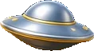
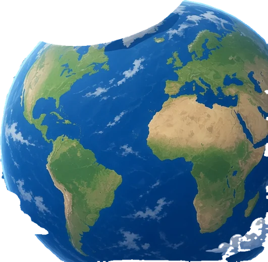
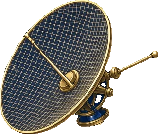

SARbit radar cleanup

I fly around Earth with a radar that sees through clouds and darkness. Something changed down there: floods, cut forests, harvests, oil.
I have radar pictures from before and after. Put them in two colours and everything that changed will glow. Then mark where it glows. Can you find all the changes?
Who's playing? Tap your name:
New cadet? Type a name:
Real data: NASA-ISRO NISAR L-band radar, 2026. Alien, icons and mission cards: AI-generated art (Grok Imagine).
Made by a MENASIM team: engineers who volunteer for environmental challenges. Mentor: Yakov Geltser.